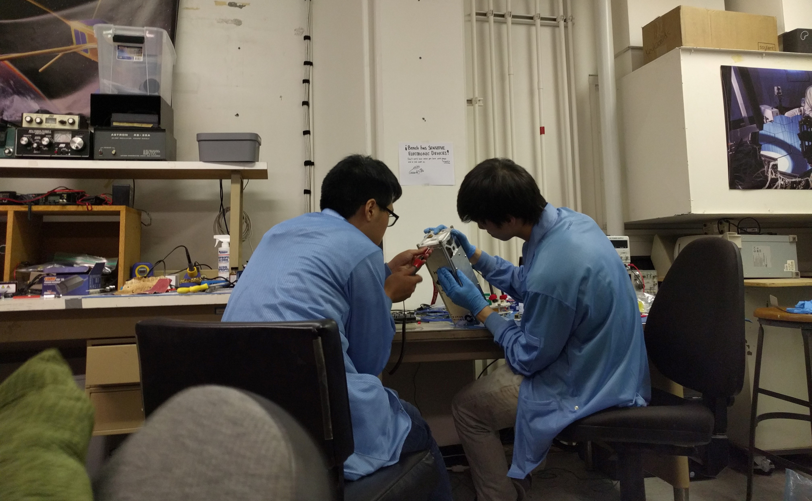

REACH
Rocket Payloads
Developing amateur rocket payloads in standard cubesat form factor.
The Project

Project Reach is intended to develop scientific and engineering payloads to be flown on amateur rockets. Reach provides a unique platform for addressing several goals, including the opportunity for high altitude research, rapid prototyping of payload in CubeSat or similar form factor, and potential external collaborations. Reach provides an opportunity for students with mid to high levels of engineering experience an opportunity to develop functional payloads while learning skills that are in demand in today's aerospace industry.